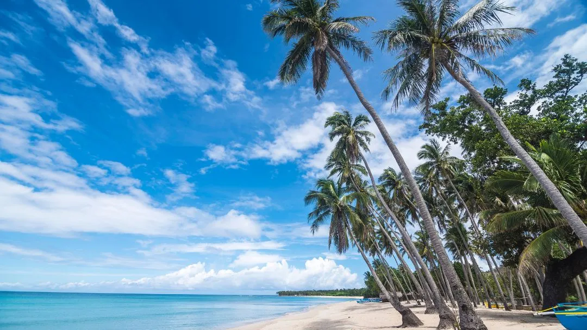

Gear & Planning • Philippines
Packing for Different Weather
For hot weather, use light clothing and sun protection. For rain, add a waterproof jacket and dry bags. For mountain trips, bring warm layers and check forecasts.
Helpful reminders
- Check official park announcements and local weather before visiting.
- Wear lightweight and breathable clothing during hot weather.
- Bring sunscreen, sunglasses, and a hat for sun protection.
- Pack a waterproof jacket or raincoat during rainy conditions.
- Use dry bags or waterproof covers to protect important belongings.
- Bring warm clothing for cold mountain temperatures.
- Prepare extra socks and clothing in case you get wet.
- Check weather forecasts before starting your trip.
- Adjust your packing list according to the location and season.
- Follow posted rules and instructions from park staff or guides.
- Respect nature and local communities; take all trash with you.